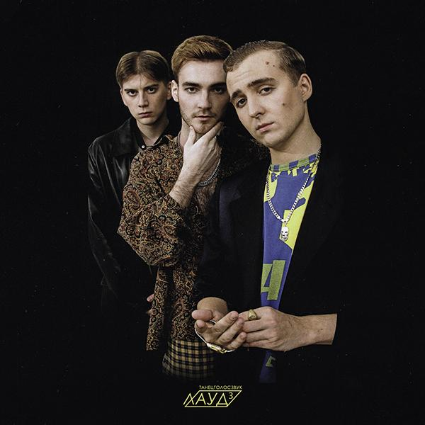

ЛАУД
House · Уфа · 2013-н.в
ЛАУД — электронная группа из Уфы. Группа состоит из 3-х участников: Виталий Александров (Taly), Рамиль Абдеев (Goddeem) и Сергей Куликов (Smith). Своей основной задачей коллектив видит создание, распространение и развитие электронной музыки в России – это предполагает отказ от жанровых рамок, желание воспринимать любой звук как вызов и готовность охотно работать с экспериментами.